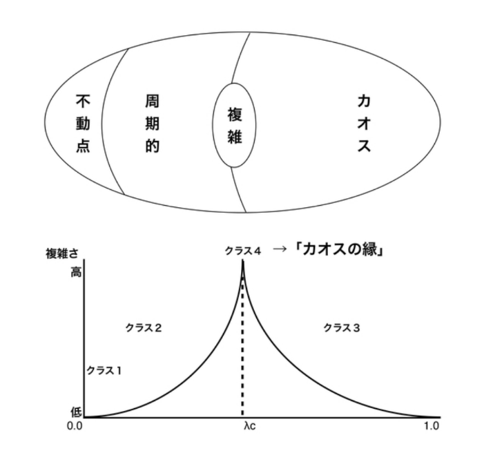

今回はBIOMAN（純太）さんをお招きし『千紗子と純太と君』という作品を取り上げてみたいと思います。
この作品、表面的には昔ながらの良いポップスのように聴けてしまうので気付きにくいんですが、かなり掘り下げ甲斐のある作品ですので、OPNの回に続き、知って聴くとより面白くなる解説トークをさせて頂きます。
普段私は、ポップスはあまり聴かないのですが、2017年にたまたまtwitterで『若光物語EP』を知りとても気に入ってしまいました。理由は、まず普通に曲、声、歌詞が全部良いという点と、一般的な恋愛ソングの切なさとは違う、ある種の無常感が、今の年齢の自分にフィットしたという点があります。何か言語化しにくい複雑な感情が取り巻いている…そんな風にも感じました。それにしても、なぜ高句麗から派遣された使節である高麗若光（こまのじゃっこう）という「日本書紀」の記録まで遡る人物を取り扱ったのか。それも不思議で曲に託された意図を知りたいと思い、気が付けば何度もリピートしていました。
そして、昨年リリースされたアルバム『千紗子と純太と君』はその「若光物語」の考えが押し進められ、さらに奥行きとアイデアと挑戦を感じるものでした。私が画期的と感じた点、それはこの4点になります。
面白いのは何も難しく考えなくても伝統的な良メロのポップスとして、昔ながらのJ-POPのような恋愛や別れの曲として聴く事が出来る点です。しかし、ここにあるのはかつてのJ-POPに見られた、輝かしい未来に向かって突き進むような若者向けの価値観はありません。むしろそういうものはもう無く、虚構だと分かってしまった後の話で、とても現在的な視点だと感じました。ユニット名や写真（やまがたすみこオマージュ）のイメージから一見懐古志向と思ってしまいますが、相反した事をやっています。
作品はシンプルな言葉で構成されているのに、入り込めば民族浄化、民族の離散、シンクレティズムなど、寄る辺のない文化的状況に立たされた人の感情まで考えさせられる深みを持ちます。こういう話はあまり語られない上に、ポップスで扱われる事はまずありません。こうした正史では語られにくいユダヤ人の離散状態であるディアスポラやガルート、ロマなど複雑なアイデンティティを持つ人々の感情がモチーフにされている点も今作に興味を持った理由になります。
もう一つ画期的だと感じたのは、このアルバムが映画『マグノリア』やゲーム『街』のような群像劇構造になっている点です。アルバムの各曲で歌われる事情はそれぞれ複雑な感情を抱えていて、違う立場でありながらどこかでクロスしています。それも言葉遊び的な、ワードの交差ではなく「この喪失感とかこの悲しい感じってあの曲でも感じたな」という感情の交差になっているのは、なかなか高度な事だと思います。
BIOMAN氏は、2017年に『レプトン』という奈良観光案内誌を作成されています。そのあとがきに「カオスの縁（ふち）」という複雑系科学の概念の話を持ち出されています。これは難解な話ですが平たく言えば、秩序と混沌の中間領域に存在する臨界値の事で、複雑性において最も豊かな領域とされています。案内誌には、この概念が日常の出来事の中にも感じる事があり、特に「言葉にできない領域」に近いものを感じたという話を書かれています。
この考えは特設サイトに書かれた「
言葉にできることのみを行動原理とすることと人の豊かさは相反する
」という事にも繋がっており、今作のコアの部分ではないかと私は考えています。これは後ほど解説いたします。
では、BIOMANさんに話を聞いていきます。よろしくお願いします。
ーまずジャケットから聞いてもよろしいでしょうか？この絵画の意味はなんでしょうか？なぜトンファー？影のあるライティングには理由がある？など、撮影されるにあたって込められた考えを教えて下さい。
BIOMAN（以下、B）：まず、表層的な部分では画面の美しさとかの良し悪しを考えてラフを書いてこういうジャケットになったわけですが、どこの国かよく分からない感じを出したかったというのがあります。
まずトンファーを持つ事だけが決まっていた感じですし（笑）。これはただ面白いかなという事で意味はありません。絵に関しては入れ子構造にしたかったというのと、エヴァの旧劇場版が好きなのですが、そういう哲学や宗教を散らつかせて色々匂わせる感じです。この絵は、曲にも出てきますが「イグレシア・二・クリスト」と「エル・シャダイ」というフィリピン独自の2つのキリスト教の「エル・シャダイ」の方をイメージしてイラストレーターの沖真秀さんに描いてもらったものです。
フィリピン自体、東南アジアですが16世紀にスペインに、20世紀にアメリカに植民地にされ宗教はキリスト教が信仰されている、とそれだけでも複雑な歴史の上にあるのですが、さらにその後に独自に生まれた宗教というのが複雑だなと思いモチーフにしました（フィリピンは国民の83%がカトリック、その他のキリスト教が10%）。オファーとしてはその事と、フランスの画家アンリ・マティス（1869年～1954年）がディレクションした礼拝堂があって、そのステンドグラスや聖母子像などマティス風に解釈されたミニマルな感じが面白くてそういう感じを出して下さい、と伝えました。
あと、ライティングに関しては、これいいなと元にしたものはあります。ちょうど東京の鈴木竜一郎君という写真家の人に言われて僕も分からなかったんですが「この人工的な光で自然光っぽくという照明は難しいです」とおっしゃっていました。あと、別カットも色々撮ったんですけどね、ツラがしゅっと一番よく見えるからこれにしました（笑）。
※ 「千紗子と純太」について、話中の歌詞やビジュアルはこちらの＜特設サイト＞にまとめられていますので、併せてご覧ください。
ーありがとうございます。では、１曲目から聞いていきたいと思います。この曲、すごく良い曲なんですけど、人の生きたストーリーは終わる、未来は色褪せて、心は閉じていく、と非常に希望のないリアリズムが描かれています。で、諸行無常的に悟っているかと思いきや「嫌なんだ」という感情的な部分もある。しかし締めには「千紗子と純太なら大丈夫」「任しとき」と言われる。これはどういう事か解説して頂けますか？
B：先ほど話のあった群像劇という手法でこのアルバムは構成されていて、曲ごとに主人公がいるのですが、この曲はタイトルにも表れていますが、メタ的というか…これは俺自身の話です。例えば『メタルギア・ソリッド』や、『ブラックジャック』でも手塚治虫本人が出たり、作品に作者が出てくる手法がありますが、これはそういう感じで、各曲の空想の人が色々救いようの無い事を言ってる中、それに対して自分がガス抜きをしている感じです。それと、こういうつらい事を思っているのも自分なんですが、古川さんも感じているかも知れないですけど、年取るとつらい気持ちになる事が多くないですか？ 突然、人が死んだり、とか。
ーありますね…。人と疎遠になったり別れがあったり。
B：ユニコーンの「すばらしい日々」の、“時間もないしたまに会っても話題もなく”じゃないですが、そんな無常観もあるし、近い人の死とか…。そういう悲しい気持ちが募りまくって、でもこの気持ちに対してけりを付けるわけでも忘れてしまうのではなく、傍においてそれも受け入れて生きていくぞ、という曲です。エモいですね（笑）。
ーそうなんですね。僕もこの作品がすごい自分事化できる所があって、その理由がちょっと分かりました（笑）。で、「千紗子と純太なら大丈夫」「任しとき」というこの部分は、Mikikiのインタビューによると、植木等の“仕事のないやつぁ俺んとこへこい 俺もないけど心配すんな”(「だまって俺について来い」)みたいな根拠のなさを取り入れた、との事ですが。
B：そうですね、先ほどの④カオスの縁の話での「言葉にできることのみを行動原理とすることと人の豊かさは相反する」という、この事が今自分の表現活動の根幹にあるものなんですけど、何か分からんけど大丈夫っていう根拠を持たない言い回しをしているのは、言い換えればちゃんとした文脈だとか根拠があるもの、きちんとした真実足り得るものがないと安心できない社会に対する反発があります。
ー今のネット社会だと特に、フェイクかどうかとか、ファクトチェックは？みたいな話が飛び交っていますね。
B：そうですね。で、そういう大多数が納得できる言葉や根拠を行動原理にした先は、マズローの五段階欲求の下の層に生理的欲求があると思いますが、そういう食欲、睡眠欲、性欲みたいな動物的な欲求を満たす事に行き着くと思うんです。それってもうサルというか、あまりに動物的じゃないですか。それに対し、何や分からんけど、大丈夫や、生きていこう、みたいな事でも安心できるんやったら、その方がよっぽど人間らしい営みなんじゃないかという、そういう表明でもあるし、自分に言い聞かせていることでもあります。
ーなるほど。僕もネットの広告業界で仕事をしているので、分かりやすい言葉や根拠をもとに人が動物的に動かされたり消費や欲求を満たしていたり、というのは年々感じます。あと「意味がもし必要なら言葉は消えて無くなる」「僕らが知り合う理由など後づけ」という所が分かるようで分からなかったんですが？
B：これも同じですね。人が誰かを愛する理由や条件って、ルックスが良いから、お金を持っているから、みたいな分かりやすいものが多いじゃないですか。ではなくて、何となくその人と一緒にいたかったからという後付けでも付き合う理由になり得るんじゃないですか、という、別に何でも後付けでもいいんじゃないですか、という気持ちですね。
ー１曲目から濃いです。①の伝統的でありながら現代的と感じたのはこういう事です。
ーでは、2曲目の「ウェイブライダー」です。この言葉、何か分からなくて検索したら飛行形態を表す言葉で、あとはZガンダムの形態とかが出てきます。それは曲で歌われている不定住な生き方をしている人物のボーダーが無い感覚を指しているのでしょうか？同時にグローバル化における多様化と画一化の両義性の指摘もされていると思うのですがどうでしょうか？
B：それで言うと、完全にZガンダムですね（笑）。ガンダム好きで。最近もバンダイのガンプラのサイトとかよく見ています。その飛行形態という事で合っています。で、この2曲目からは、俺ではなく、空想上の人物に変わっていきます。ここでの人物は、仰った不定住な生き方をしている人で、土地とか物に執着がない人です。ミニマリストっていますよね、macbook持ってたらどこでも仕事できるでしょ？みたいな人。そういう人を題材にしているんですけど、俺、ミニマリストって嫌いで。土地とか故郷とか自分が懐かしいと思える景色に執着する事を否定されている事にすごい腹が立つというか、そういう思いがあったので。そういう一見どうでも良い事に俺は執着してないって事で人間的に高次なところに行っているぞ、みたいな。別に言ってないと思いますが（笑）、込められているような気がして。だからこれも先ほどと同じで、そういう分かりやすい理由にしか自分の行動の根拠を置けない奴、そんな奴はしょうもないなっていう。何となくここが好きやから住んでるねん、くらいの理由でいいやんという事です。仰っている「どこに行っても同じでつまんない／それって言い換えれば世界はひとつ」の部分は、そこまで問題提起したものではなく、そんな登場人物の世界の捉え方です。
ーなるほど。ここで、ロマやガルートという言葉が出てきます。ロマというのは遊牧民、差別されていた少数民族、ガルートというのはユダヤ人の離散や追放を表す言葉。なぜこのような言葉が出てくるのでしょうか？
B：そもそもこの『千紗子と純太と君』というアルバムを作るにあたって、特設サイトを読んで頂いていた方は分かるかと思うのですが、実存か構造か、つまり自己か他者かの主観をどこに置くか、その合間のヒリヒリした境界線を題材にしたいなと思ったんです。そう考えるうちにアイデンティティが曖昧な人の事…このサイトにも書いている移民問題、在日、シオニズム、ロマへの差別、シンクレティズムなどの問題に考えが及んでいきました。
自己肯定、帰属意識という自分をタグ付けするものをどれに置くべきなのか。家族、恋人、土地、宗教、はたまた自分自身なのか。そして、このロマとかガルートみたいな大きな社会問題を、もっと日常的な「恋人と別れてつらい」「お金はいっぱいあるのに将来不安」とかの身近な感情へと転写できるようにしています。入り口は身近で取っつきやすいけど、奥にはそういうものが込められているぞ、という構造です。
「Return to Native なんて面倒」というのもユダヤ人問題に絡んでいて、そういう感情を否定するのもどうなんだという事です。
ーなるほど、そうすると見えてきますね！で、そんな「いいじゃん」って言い飛ばしている登場人物ですが「ファイターみたいに強い心／支える根拠が欲しいな／土？街？誰か教えて」と、根拠を求めるけど、分からなくなってきて誰か教えて、と若干不安になっていきますね。
B：そうですね。こういう、ふとした瞬間に不安に襲われる、というのはこのアルバムにおいてポイントになっています。「ファイター」や「土」に関しては、後にも出てくるのでその時話します。
ーでは、次「馬鹿」。これは、自分で考える前にネットにある意見を調べて自分に都合の良い情報だけで論理を組み立ててしまう、そんなネット社会に見られる人の愚かさの歌だと捉えていますが、どうでしょうか？
B：この曲は『若光物語EP』のB面曲でアルバムの前にあったものなので、群像劇的な事も1、2曲目にあったようなテーマ性も薄いです。言葉に関しても、割と語感で選んでいます。「馬鹿」と言っているのは、大体仰っているような事ですね。何でも鵜呑みにしてしまう人、受動的に情報を受け取っているだけのくせに、自分の意見かのように「これめっちゃヤバいで」って言い回っているような人いますよね。でも自分に興味のない事は無視という。まぁそういう人に普段からムカついていますので、そういう所が出てしまったという事ですね（笑）。
ーBIOMANさんの呪詛ですね（笑）。元のバージョンは、咳払いとかも入っていて良い意味でラフな録音で、余白のある作り込みすぎない感じがあって聴き比べも面白いです。
ーでは、４曲目「小道- Nós uma estrada -」。これは劇中劇になっていると思いますが、状況を説明して頂けますか？そして、speedy lee genesisさんという東京でDJ活動されている方を作詞に起用された理由を教えて下さい。
B：これは…そもそも、南米のスペイン語やポルトガル語の音楽をよく聴いているというのもあるんですけど、何となく語感が日本語に似ていて、そういう日本語と外国語の間にあるような感じが好きだったというのがあります。それで「そういう言語で語りをするトレーラー映像を作りたい」というアイデアは千紗子と純太を結成する前からずっとありました。
で、いよいよやりたいなとなってポルトガル語を話せる人を探していた所、エスリー（speedy lee genesis）さんがそういう勉強をされていると聞いて、お願いしました。構想のように当初はトレーラー映像としてだけで思っていたのですが、とても良かったのでアルバムにも入れました。
これも沖真秀さんに頼んだ絵画のように、入れ子構造にして下さいと頼んだのでこのような歌詞になっているという感じですね。
ー「私の家と君の家の間には 森へと続く小道があった…」という語りは、個人的な回想しているように読み取れます。
B：そうですね。そういう手紙にもならないような、誰かの独白みたいな感じをお願いしたので。結果的に登場人物半分・自分の事半分というこれもアイデンティティの曖昧な境界というテーマに繋がっていたし、それも含め良いものを上げて頂いたと思います。
ー私的なテキストの中にも「アクション映画」「ファイター」という言葉が出て気になります。「ファイター」は先ほどの２曲目の「ウェイブライダー」でも登場しました。これはどういう意味合いなんでしょうか？
B：個人的には自分が理想と考える人の事、という意味で設定しています。またエヴァの話でご存知か分かりませんけども、碇シンジにおける渚カヲルみたいな事です。庵野秀明はシンジが考える完璧な自分として渚カヲルを設定したらしいんですね。そういう理想像、自分の持っている欠点を全て克服した存在としての「ファイター」という風に使っています。アイデンティティの揺らぎや不安を克服した理想像です。
ーありがとうございます。では、5曲目「You know who we are」。これは僕は風俗嬢の歌だと捉えていますがいかがでしょうか？「愛は売らない」っていうのは身体は売っている事だと思いますし、「明日は雨／16時から」とかそんな半端な時間に普通の人は動き出さないです。「二人で会って／隠した指輪」も完全に浮気行為の事だと思いますし。
B：うん…概ねそうですね、まぁヤリマンの歌です（笑）。先ほどから一連の、何かしら自分が曖昧になっている群像劇の人物設定で言うと、これは誰彼構わず身体を許してしまう人。ただ風俗嬢と特に職業は設定していません。この曲は、物語的なところよりも曲作りの方に時間を使いました。打ち込みの感じとかミックスとかすごく難しかったです。
言葉も3曲目の「馬鹿」みたいな感じで語感に任せている感じです。例えば「指輪」「時から」「売場」「who we are」は韻を踏んでいます。あとメロの所の歌詞は千紗子も作っています。僕も完全にヤリマンの気持ちも深くは分からないので…。
ー千紗子さんはご理解されて…？（笑）
会場におられた千紗子さん：これは友人にそういう人がいまして、モデルにしています。
ーどうりで何だか生々しいんですよ。ヤリマンの人ってiPhoneのガラス割れてそうですし（笑）。すみません、完全に偏見なんですけど、何と言うか、お金はあるんだけどある部分では頓着しない部分とか心の隙間があるというか…。あと「愛は売らない／生鮮売場」という、ポスターにもこの言葉使われてましたけどインパクトがありますね。あと曲名についても教えて欲しいのですが。
B：そうですね。これもテクニック的なもので「愛」というものと「生鮮市場」という離れた場所に位置するような言葉を一緒くたにしてそのギャップを楽しもうみたいな事ですね。曲名は、韻というか語感重視なのですが、後付けとして言うならば「あなたは私たちの事知っているでしょう？好きだとかいうコミュニケーションを飛ばして身体を売っている事を」というような事ですね。まぁでもこれはヤリマンの歌という事でそんなにシリアスではなく、１曲目のようなちょっとガス抜きのような曲です。
ーでは「Iglesia ni Cristo（イグレシア・ニ・クリスト）」。これはジャケットの話でのフィリピン独自のキリスト教ですね。
B：そうですね。特設サイトにも書いているんですが、まずうちの近所の教会に「細川ガラシャ」という人物の像があって、それを調べ進めていく所から始まっているんですが、その教会にガラシャと対に立てられた「ユスト高山右近」の像があり、この人はキリシタン国外追放令を受けてマニラの地に送られた人です。フィリピンはスペイン植民地ですでにキリスト教があったから歓迎をされたらしいですが、そうした事を調べているうちにそのマニラの地の植民地としての歴史、そこで興った新興宗教「エル・シャダイ」と「イグレシア・ニ・クリスト」に行き着いて、ジャケでは「エル・シャダイ」、曲ではこちらを使ったという感じです。
ー「イグレシア・ニ・クリスト」というのは「キリストの教会」という意味で、自分たちの教会こそが神に唯一認められたキリストの教会であり、その他の教会は全て偽物という割と強い主張のため弾圧もあったそうです。歴史的にはほんの100数年前の事で、人口の2、3割とそんなに多くはないようです。フィリピン自体、スペイン、アメリカの植民地支配が続き、宗教的にも本当にアイデンティティの蹂躙があった土地で、こういうフィリピン独自のキリスト教というのもまた複雑なものですね。
B：そうですね。そういったものを調べていくうちに、一枚岩ではなく複雑な要素が混じった上で形成されるアイデンティティを取り上げたいと思いました。
ー歌詞に英語を使われた理由は？
B：これも語感だったと思います。自分の変な癖なんですけど、トラックのオケ部分に変なモジュレーションのパッドとかシンセのモアモアみたいなのを入れてしまうんです。無理やりジャンルで言うならネオR&Bというかジャミーラ・ウッズみたいな感じになるのですが、そういうオケに日本語より英語が合っていたので。 この群像劇では登場人物は自分のアイデンティティを他の何かに担保している人というの共通点がありますが、この人はずばり宗教。色々宗教的な要素を散りばめていると言ってきましたが、これは全面に押し出した人物像です。 それも「イグレシア・ニ・クリスト」みたいなちょっと変な新興宗教を信じていて、信じているんだけど、どこかしら頼りなくて信じきれるかどうかあやふやになって不安になってきている。 最後に宗教ではなくて「あなた」という言葉が出ますが、もしもパートナーと呼べるような人がいてたら、そっちを信じていた方が良かったんじゃないかな、という事を感じている歌です。
ーこれも考えさせられますね…。
B：あと「争いや嘘じゃなく『多様を』『平和でいよう』って言ってるそばから君に冷たくしちゃう」という部分。 これは「多様だ、平和だ」というのは宗教の教義や、リベラルと呼ばれる人たちの考えにもあるものですが、そういうものを立派に掲げているのに、身近な人には冷たくしてしまうという理念と行動が分離しているのを感じて、宗教が信じるに値するものなのか、揺らいで不安になっている、というような状態です。
ーあぁ、分かります。そういう人いますよね。ポリコレの問題とかにも繋がるというか。
B：ほんま酷いやついますよね。現実にもそういう事を感じて、この呪詛はテンテンコちゃんの曲 （「Animal's Pre-Human」）の方でもっとぶつけていますが。
ーあれも辛辣ですね。可愛い曲だから余計にギャップがあってすごいな、と。こちらも今作と同じく、BIOMANさんの呪詛が込められた名作なのでぜひ聴いて頂きたいです。最近のBIOMANさんの得意技で「自らの手は汚さず、女性を語り部に世を切る」という千紗子さんと全く同じやり口です（笑）。 あと「普通とは違う趣味／写実派の絵／見ずに出る」というのはどういう意味でしょう？この絵はジャケットと関係あるのでしょうか？
B：そうですね、これも先ほど、分かりやすい言葉がないと行動理由になり得ない事への指摘の話をしましたが、「抽象は信じられない」という強い気持ちを持っている人の表れとしての「写実派」です。 ジャケットの絵はそれに対して抽象画となっています。この人は、それを信じすぎてちょっとおかしくなってしまっている。宗教の、人が何でも信じてしまう部分を表している感じです。 宗教にも思う所はあって、真理を探しに行くって玉ねぎの皮を剥くような話じゃないかなと。突き詰めて皮を剥き続けるんですが、実際には何もない。 その核に何かがあるんじゃないかと思ってそこに向かうんだけど、それよりもそこに向かう過程や信じる気持ちの方が大事なのではないか、と。そういう思いも入っています。
ーでは「骨拾い」です。これはやばいですね。人骨です。今までも決して明るい話ではなかったですが、もう骨です。しかも誰のか分からない…。 あとこの曲はアルバムにおいて「土」や「骨」という言葉があり、特にクロスフェードさせる機能を持つ感じがしますがいかがでしょうか。
B：そうですね。この曲は、もともとはこのアルバムに関連した出発点ではなかったんですが、ceroの髙城君と東京のライブハウスで話していて、最初の「夢の海」（1st EP）を書き終わった時かな「曲を作る主題みたいなものがないねん」と話していたら「今一つテーマがあるから、それで曲作ってみなよ」みたいな事を言われて作ったものです。 髙城君はその少し前にお母さんを亡くされまして、お母さんの地元の大阪に行って昔よく行ってたゆかりの場所などを巡ったりしたそうです。で、その中でお母さんの家族の骨を一つにまとめようと、あちこちに散らばっていた遺骨を集める事になったらしいんですよね。 あるお墓なんかは古すぎて土や骨がめちゃくちゃになっていて大変な状態のものもあったようですが、髙城君からしたら、お母さんを通じて間接的には知っているけど、赤の他人の骨を拾い集めている行動と風景が面白かった、という。 それをテーマにもらって曲にしてみたという流れです。俺、歌詞を考えるのめちゃくちゃ遅いんですけど、そのテーマをもらって大阪帰って寝る前に考えてたら、これは珍しく15分くらいでぱーっと出来て。いつも曲が先なんですけどこれだけは詩が先に出来まして。でこの詩を兄貴に渡してメロディを考えてもらって、という感じです。
ーこの曲だけ別の人に作曲を預けたのは理由があるんでしょうか？
B：（背景の）意味合いを考えたらすごくパーソナルなテーマでもあるので、こちらも身内に頼んでみようかなというのと、このテーマで自分が作曲までしてしまったら、ちょっと濃くなり過ぎてしまう、と感じたんです。
ー歌詞には「土は知ってる」とありますが、これに関連して『MUSIC MAGAZINE』（2018年10月号）でのインタビュー記事からちょっと触れさせて下さい。 ここでドキュメンタリー映画『光のノスタルジア』『真珠のボタン』という２作品を制作の参考にされた、という話が載っているのですが、この『光のノスタルジア』は南米チリ・アタカマ砂漠の話で、その土地は独裁政権下で不幸な死に方をした遺骨が埋まっている土地（骨を探す女性が描かれる）でもあり、同時に標高が高く空気も乾燥しているため天文観測拠点として世界中から天文学者が集まるという場所でもあります。 で、その直近の過去と天体の光という恐ろしく昔の過去がクロスする、というちょっと面白い手法のドキュメンタリー映画ですが、その話がこの「骨拾い」にも通じてる気がするんです。 で、この映画とチリの海がテーマとして出てくる『真珠のボタン』ともリンクするんですが、それぞれ「土は知っている」「海は知っている」と色々歴史が流れても土地や自然は記憶しているよ、という言葉が出てくるんです。これもやっぱり関係しているんでしょうか？
B：そうですね、それは大いに関係しています。まず作品の手法を考える時にあたり、完全にファンタジーとか空想の事を言うのも違うし、かといってドキュメンタリーみたいな真実ばかりを言う構図になるのも面白く無い、そんな事を考えている時にこの2作を観て自分の中でしっくり来たんです。 この映画は、基本ドキュメンタリーで色々な真実の話が出てくるのですが、それが話としてクロスフェードする時に何か寓話的でファンタジーっぽく見えてくる。この感じがすごく良かったので取り入れようと思いました。 全曲そういうフレーヴァーはあるんですが、この曲に関しては結構色濃く出ていますね。というのも、曲には色々な主観の置き方があると思うんですが、この曲は、拾われた骨の持ち主でも、骨を探している人の観点でもなく、ただただ骨を見つけて拾っているという全然関係のない人物の視点と、それが誰の骨なのかは分からないけど人でもない土とか街は知っているんじゃないか、というさらに別の視点とか色々なものが混じって交錯した所にファンタジーみたいなものが生まれていれば良いな、と思って作ったんですよね。 あと、これはもう単なる小細工なんですけど、髙城君の息子、街（まち）くんと髙城君の仲良くしている人の娘さんが灯（あかり）ちゃんで、その名前が「街は知ってる」「どんな灯がともったか」という歌詞に入っています。次世代に込める思い、というか（笑）。
ーあぁ、なるほど。死にゆく命もあれば生まれる命もある、という感じがしますね。この映画は良い作品ですので、良ければ併せて観て頂きたいです。あと、すごいエピソードをMikikiのインタビューで仰ってましたね？
B：そうですね、先ほどうちの近所の教会にある「細川ガラシャ」というキリシタン女性の像から色々フィールドワーク的に調べていく事で作品が作られている、と話しましたが、特設サイト用にそうした事を書いたテキストと完成した曲を髙城君に送ったところ「その細川ガラシャ像のある教会って、お母さんの兄貴が骨を納めているところだよ」って言われて「えぇ！」って。どこで誰がすれ違っているかは人は知らないけども土や街はそういう交錯する事を知っている、というこの作品で歌われている事がそっくりそのまま現実で起きてしまった、という…もうすごかったです。
ーそれはすごい…。
B：深く読めば色々な事が見えてくるし、シンプルに読んでも味わいがあるし、良い歌詞が出来たなと思います。
ー面白いなぁ。では「ドラマのように」です。ここからの3曲は立場は違えど、離別からの悲しみを取り扱っている連曲になっているように聴こえます。あとこの主人公は役者さんなのでしょうか？
B：そうですね。ここからは先ほどからのアイデンティティが揺らいで自分が保てず不安になっている事がより全面に出ている三曲なのでよりそう思えるのかも知れませんね。 「ドラマのように」のこの人は特にドラマの役者という訳ではないですが、別れがあった人で、それも慣れている、みたいな人ですね。 「台本通り涙落とした」というのも「この後、私泣くだろうな（まぁいつものことだし…）」というような感じです。
ーこの主人公は女性でしょうか？この曲に限らずですが「千紗子と純太」の曲は、男性なのか女性なのか特定しにくいですよね。 大体、女性ボーカルだと女性目線になるのですが、千紗子さんはあくまで物語の語り部的というか。
B：もともと千紗子の声質が男性的とも女性的とも取れる感じがあったので、これも手法ですが、どのように取るかは聞き手に委ねる、という感じです。 この曲もどちらに受け取って頂いても良いです。あと自分も少し入っています。
ーBIOMANさん自身、一人、砂場の蟻で遊んだことあるんですか…？
B：してないです（笑）。危なすぎるでしょ。これやってたらだいぶやばい。話しかけられない。何となく思いついて、言葉の圧も強いし最初は怖すぎるからやめとこうと思ったんですが、まぁ面白いし入れる事にしました。
ーだいぶ精神状態ギリギリの表現ですね（笑）。さてこの立場に近い、失恋も慣れた感じの人が次の曲でも出て、よりテーマを具体的に歌っています。
B：「Dispersed Ego」というのは、分散したエゴ。これはさきほどからもそうですし、特に2曲目で曖昧なアイデンティティとして「ガルート」を扱いましたが、ここではそれに関連した「ディアスポラ」というテーマをあてがったという作品なんですけども、これは全てを超えましたね。
ー僕はこれがテーマとしては、一番色濃く出た曲かなと感じました。
B：誰かのレビューで「Dispersed Ego」は失恋の曲と書かれていたんですが、実はそうじゃなくて、これはアラフォーの人で失恋ももう何度か経験してて慣れていて、ある程度年収もあって何不自由ない生活を送っているけど、ふとした瞬間に不安になる、という感じの人物像です。 先ほど、ふとした瞬間に不安になる、というのはこのアルバムのポイントになっていると言いましたが、ここでもシーツを変える時、空焚きしてしまった時、意味もなく急に自分のアイデンティティが揺らいでしまいます。
ー普通の失恋や別れの曲ではないですね。
B：この人は失恋とかもギャグにできるくらい慣れているんだけども、急にドーンと落ちるようなものが来て、この気持ちは一体なんだろう？と揺らいでいる人。 そして、このドーンと落ちる気持ちに対して「もしこの私が違う土地で全然知らない誰かの事を愛していたら、まだ救われていたのかな。こんな事にはならなかったんじゃないかな」と思う。 で、そういう気持ちとして憧れられている人が主人公の話が次の「若光物語」です。 しかし、そこでも隣の芝は青く見えるように、アイデンティティを補完してくれるものはない。どっちにしても、どう転んでも、補完してくれるものなんてない、というすごく救いようのない結論に行き着くんです。
ーどう転んでも…（笑）。確かに、この「Dispersed Ego」と「若光物語」は対になっていると思っていました。 この曲で「あなたらしく生きてと言ってほしい」と言っているのに対して、「若光物語」の人物は「あなたはあなたらしく生きてね」と言っていますね。
B：立場は違えど遠いところで交錯している感じです。それが双方向になる事はなくて、直接的に言われる事はないんだけれども間接的には回っているようなイメージですね。
ーで、ここでもユダヤ人でパレスチナ以外の地に移り住んでいた人々をさす「ディアスポラ」という言葉が出ます。
B：そうですね、ここでも生活感のある歌詞の中に、社会問題となる言葉をスパイス的に放り込んでいる訳なんですけども、先ほどの「ガルート」と「ディアスポラ」はどちらもユダヤ人の帰還にまつわる同じような言葉ですがちょっとニュアンスが違うようでして「ディアスポラ」は土地に軸が置かれ、「ガルート」は時間に軸を置いているという話があります。
ー調べたところによると、ユダヤ教徒がイスラエルの復活、ユダヤ人の帰還にこだわるのは、最後の審判の日まで宗教を遵守する事で結果として神が実現するかもしれない、というのがまず根底にある、と。 で、ここでの「イスラエル」というのは神学的な概念で「最後の審判の日までは離れてもいるけど、来たるべき時がまだなんですよ」という時間的な追放状態が「ガルート」。 そして、シオニズムというユダヤ人の近代的運動により、人為的・政治的に国民国家を作って「我々は国を失って離散しているだけだから、終わらせるなら国家を作ってそこに集まればいい」という空間的な離散に読み替えてしまったのが「ディアスポラ」という事のようです。
B：はい。その違いがあるので、この曲では、この人物が憧れる「若光物語」の主人公のように「土地や空間軸が違えば私は救われたんじゃないか」という考え方という意味で「ディアスポラ」という言葉の方を用いています。 それに対して「ウェイブライダー」の人は「空間や土地なんてどうでもいいんじゃない」と考えているので「ガルート」という言葉の方を使いました。
ー恐れ入ります。そこまで考えて使い分けされてたんですね。
B：ついでに言えば、その前に「カゴメ」って出てきますが、これはユダヤの六芒星を日本語でいうと籠目という所から入れてますね。まぁ、これもエヴァですよね（笑）。衒学的な。ちょっとしたサービスです。
ーすごいなぁ（笑）。
ーそして、最後「若光物語」。最初にも触れましたが、個人的に無茶苦茶好きな曲です。EPはちょっとキーが違うバージョンですが、単純にめちゃ音が良くなって良いなぁと思いました。
B：そうですね。EPのものは自分で録音してサンクラに上げたという感じで、アルバムの前哨戦。ドキュメンタリーとファンタジーの間の子のような作品を作るプロトタイプになった作品ですね。 この主人公は、かつて恋愛をしていて別れて、今は全然違う所に何不自由なく暮らしているんです。でもたまに故郷というか、以前住んでいた街の事を思い出すんですが、もう別に一生帰る事もないし、死ぬまでにこの土地で違う誰かを愛して、何かを信じて生きていくんだろうな、と思っている。 別にその人生を否定する訳でもないし、街も人も素朴で暮らしやすい訳です。でも、何かたまに前に住んでいた街や恋人を思い出し陰りを感じる、という歌です。 主人公はその事を「日本書紀」にも出てくる高句麗から日本に亡命して帰ってこれなくなった高麗若光（こまのじゃっこう）という人物と自分の境遇を重ねています。「忘れないで、いや忘れて欲しい」とまぁ言いたい事も色々あるけども、別にもういいし、あなたはあなたらしく生きてくれてたらいいわ、とそういう事を歌った曲です。
ーそういう気持ちを形にするのは、なかなか難しい事だと思います。で、ここでも色々複雑で陰りもあるんですが、「きっと明日は晴れる」という理屈じゃない締め方があって、これは１曲目の根拠のない「大丈夫」に似てるなと思いました。
B：そうですね。この「若光物語」はアルバムの前なのでもともとそういう根拠のない大丈夫感を出すという意図はなかったんですが、これをアルバムの最後に配置してみたら、見事にループする感じになっていいなと思ったんですね。 何か色々酷い事言われたけど「明日は晴れる」と言われ、もう一回１曲目から聴いても、救いようのない事言われたけど「大丈夫」って言われてほっとする、みたいな。 そこまで意図はしていなかったんですが、良い感じに曲と曲どうしが繋がったな、と。
ー最初に聴いた時、良い曲だなと思っていたら突然「深爪は死の影」と来て、え？どうして、と思いました、これはどういう意味なんでしょうか。
B：これも生活の中のふとした時に不安に襲われるというクロスフェードです。 「Dispersed Ego」での、シーツを替えていたら急に人の死には物語がない、という事に囚われたという事と同じ感じですね。 ちなみに「意味なく靴を揃えてみた」と「靴を揃えて脱ぐようになった」という部分もクロスさせています。 この二人の登場人物は、もしかしたら境遇すら一緒だったら同一人物だったかも知れない、というくらい近づけて作りました。 でも、ないですか？年いったら悲しいけどもうこれで受け入れて生きていくしかないみたいな事。
ーありますね。今の年齢や感情に何かこの曲が合うな、好きだな、と思ったのはそういう事だなと再確認しました。やっぱりつらい気持ちを経た人が作った作品は分かりますよ。包容力が違う（笑）。
ーでは、最後に最初に挙げた④の「カオスの縁」の話をします。なぜBIOMANさんがこういうアルバムを作ったのか。僕はこれがこのアルバムのコアの部分だと思っています。 「カオスの縁」について説明すると、複雑系科学という分野があるんですが、例えばバタフライ・エフェクトという「ブラジルの1匹の蝶の羽ばたきがテキサスで竜巻を引き起こす」みたいな話が有名ですが、複雑な事象をどこまで解明できるかというものです。 1982年、セルオートマンという計算モデルの研究がスティーブ・ウルフラムという物理学者によって行われ、その中で4つのパターンが発見されました。 1つ目はlimit point（不動点）という時間が経つと動きがなくなるパターン、2つ目はlimit cycle（周期的）という惑星の周期運動のようなパターン、3つ目がstrange attractorというカオス状態。そして4つ目に、今までの力学では全く見られなかったパターンが発見されました。 その後、クリストファー・ラングトンという科学者がλ（ラムダ）パラメーターという指標を導入してその４つの状態を図のように分類し、ノーマン・パッカードという人がこの４つ目のパターンを「カオスの縁」と名付けました。 専門家たちは、この硬直した秩序でもなくカオスでもない、中間領域で起きた臨界点を「複雑性において最も豊か」として、生命の誕生の奇跡はこの臨界点で起こったともされています。
すみません、音楽のトークでこんなややこしい話を（笑）。 でもこの概念は、何か色々な事に通ずる所もあるし、どうせ味わい尽くすのならここまで行った方が面白いと思いましたので。 この概念は、先ほども挙げましたBIOMANさんの奈良観光案内誌のあとがきに書かれていて、この概念こそが『千紗子と純太と君』ひいてはBIOMANさんの活動のコアになっているのではないかと。

B：はい。この「カオスの縁」というのは、分かりやすく言うと「タグ付け出来ない」とか「グレーゾーン」という風に捉えました。 まず、今の話のように物事が生まれやすい、豊か、という特色があるんですけども、もう一つ補足として、その領域にイレギュラーなものが入ってきた時、今まで生まれていたものが保持されやすいという特性もあるんですね。環境に対する耐性がすごく強い。 これは言い換えれば、生き物らしさ、というものの中核になる部分と思っていて、レトリックかもしれないですが、「不動」「周期的」「カオス」など画一的な言葉で説明できない状態、これをさらに言い換えたら「タグ付け出来ない」とか「グレーゾーン」という事になる、と考えました。 この領域にこそ、先ほど言ったマズローの生理的欲求に収束されない理由、根拠があるのかなと。そして、それこそが人間らしさではないのかと。なので、多数派に分かりやすい言葉ではなく中間的な言葉を積み上げて作品を作るのが一番豊かな事を表現できるんじゃないか、それが創作のテーマとしてずっと考えていた事です。 この複雑系の話はここに至るまでのきっかけという感じですね。
ー確かに、物事は弁証論的な所に答えがあるとよく感じます。プラトンやデカルトは言葉というものは世界を救うとしましたが、言葉というのは区別をするものなので、世界を分断してしまうものでもあると思います。 例えば、右とか左の極論に本質が無いように物事は実際はもっとグラデーションみたいになっていて、本質はその中間領域にあると感じる事は多いです。 今日は色々予習をして臨みましたが、予想の数倍上をいく深い話が聞けました。一層目は、普通っぽいけど何かメタ的、で二層目では、タグ付けのできない人の脆さの話だなというのが分かる。そして三層目に「カオスの縁」まで知ると、これが単につらい事が描かれただけのものではなく、人間らしさや豊かさの正体に肉薄するものである、という事が分かる。 という近年のポップスにおいて稀に見る深度のある作品『千紗子と純太と君』を読み解くトークでした。今日はありがとうございました。
B：ありがとうございました。